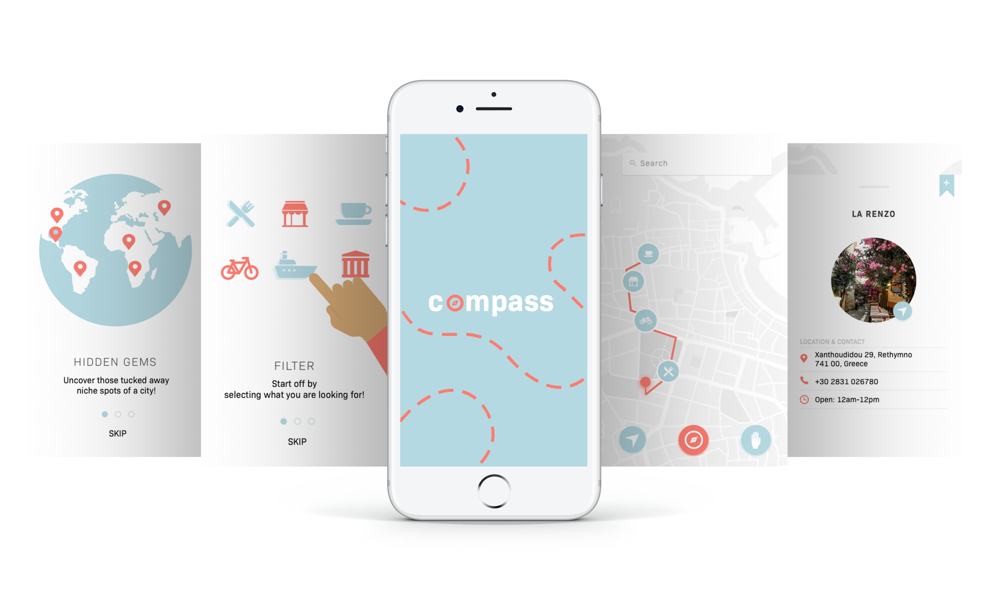
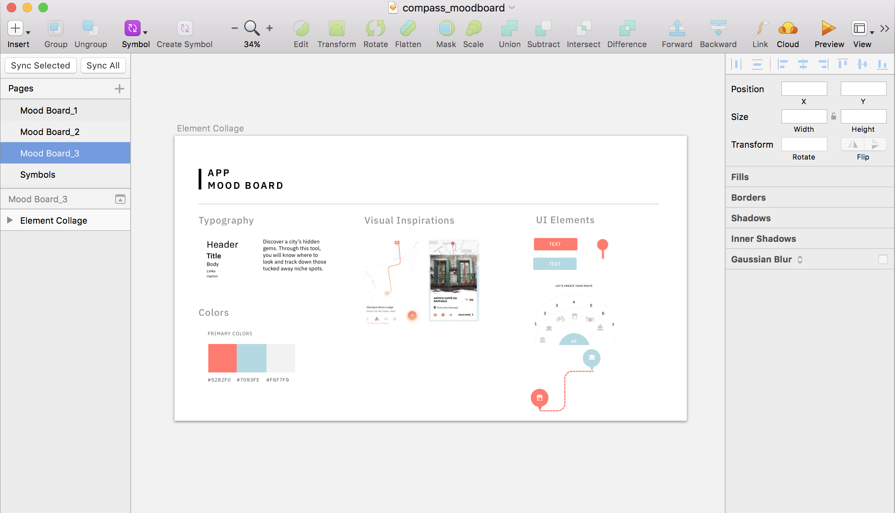

Project Overview:Compass is an app that can help individuals discover a city’s hidden gems. Through compass, individuals are able look and track down those tucked away niche spots.
Roles: User Testing, Wireframing, Prototyping, Branding, UI/UX
If interested in reading more, I documented my process through a Tumblr blog.
Compass App


The Idea
Compass is an app that can help individuals discover a city’s hidden gems.
The idea for this project grew from traveling experiences. Some questions that came to mind were
‘What is near me?’ or ‘What am I missing out on?’. As I spoke to different people,
I discovered that individuals want to experience the local life. Although
touristy spots are a top on the list for most travelers, it seems that individuals
also want to discover those special places that may be overlooked.
I started brainstorming ideas in which I could help individuals discover those hidden spots. My approach was to create the idea of user routes.
I started brainstorming ideas in which I could help individuals discover those hidden spots. My approach was to create the idea of user routes.
Research Phase
Through my online research, I came across valuable information
Prototype Phase

The prototype phase kicked off with paper sketches. I presented 5 polarizing
concept to users. Insights and reactions were taken from each paper prototype.
User Journey
Final Phase
I started off the prototype phase with paper prototypes I presented 5 polarizing
concept to users.